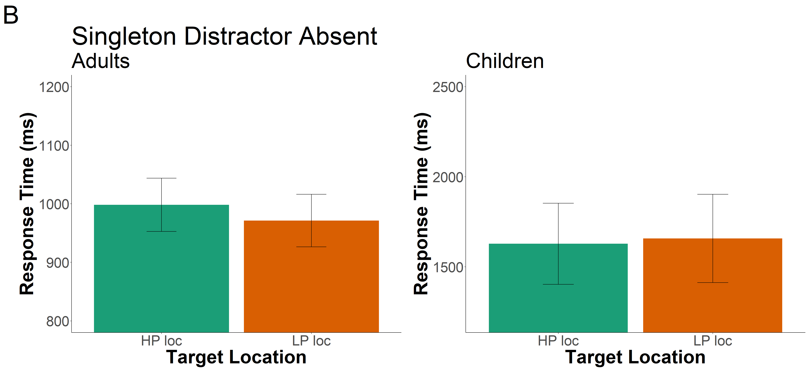

The goal of this portfolio is to examine part of my thesis data. To recap, my thesis is examining distractor suppression in children and adults. Participants are shown a distractor in a location more frequently than other locations in a visual search array. Based on previous studies, we would expect adults to suppress their attention to the high-probability location, but we were unsure when in development children develop this ability.
library(tidyverse)
library(tidyr)
library(rstatix)
library(data.table)
library(afex)
library(emmeans)
library(psych)
library(ggprism)
library(patchwork)
library(magrittr)
library(cowplot)I put all the messy loading in of different data sets and adding in important columns to an R script instead of having it here.
Define trimming criteria according to Van Selst and Jolicoeur 1994.
xsize <- c(4, 5, 6, 7, 8, 9, 10, 11, 12, 13, 14, 15, 20,
25, 30, 35, 50, 100)
stds <- c(1.458, 1.68, 1.841, 1.961, 2.05, 2.12, 2.173,
2.22, 2.246, 2.274, 2.31, 2.326, 2.391, 2.41, 2.4305,
2.45, 2.48, 2.5)Trim the data and compute the percent trimmed
trimmedA <- adults[adults$acc==1, ] %>% group_by(id, relative_target) %>%
mutate(sdc = ifelse(length(rt)>=100,2.5,approx(xsize,stds,xout=length(rt))$y), avg = mean(rt), stdev = sd(rt)) %>%
filter(rt <= sdc*stdev+avg & rt >=avg-(sdc*stdev) & rt >=200 & rt<=2500) %>% #exact upper limit =2464.175
select(id, age, relative_target, relative_hp_dist, rt, block_num) %>% #keep these columns in the new data frame
as.data.frame()
statPrep <- trimmedA %>% group_by(id, relative_target) %>% summarise(measurement=mean(rt)) %>% as.data.frame()## `summarise()` has grouped output by 'id'. You can override using the `.groups`
## argument.100-(nrow(trimmedA)/nrow(adults[adults$acc==1, ]))*100## [1] 5.0587745.06% of trials were trimmed from the adult data set.
trimmedC12 <- kids12[kids12$acc==1, ] %>% group_by(id, relative_target) %>%
mutate(sdc = ifelse(length(rt)>=100,2.5,approx(xsize,stds,xout=length(rt))$y), avg = mean(rt), stdev = sd(rt)) %>%
filter(rt <= sdc*stdev+avg & rt >=avg-(sdc*stdev) & rt >=200 & rt<=7590) %>% #exact upper limit =7586.794
select(id, age1, relative_target, , relative_hp_dist, rt, block_num1) %>% #keep these columns in the new data frame
as.data.frame()
statPrep <- trimmedC12 %>% group_by(id, relative_target) %>% summarise(measurement=mean(rt)) %>% as.data.frame()## `summarise()` has grouped output by 'id'. You can override using the `.groups`
## argument.100-(nrow(trimmedC12)/nrow(kids12[kids12$acc==1, ]))*100## [1] 4.5305684.53% of trials were trimmed from the older child data set.
trimmedC6 <- kids6[kids6$acc==1, ] %>% group_by(id, relative_target) %>%
mutate(sdc = ifelse(length(rt)>=100,2.5,approx(xsize,stds,xout=length(rt))$y), avg = mean(rt), stdev = sd(rt)) %>%
filter(rt <= sdc*stdev+avg & rt >=avg-(sdc*stdev) & rt >=200 & rt<=18950) %>% #exact upper limit =18929.79
select(id, age2, relative_target, , relative_hp_dist, rt, block_num2) %>% #keep these columns in the new data frame
as.data.frame()
statPrep <- trimmedC6 %>% group_by(id, relative_target) %>% summarise(measurement=mean(rt)) %>% as.data.frame()## `summarise()` has grouped output by 'id'. You can override using the `.groups`
## argument.100-(nrow(trimmedC6)/nrow(kids6[kids6$acc==1, ]))*100## [1] 4.2056074.21% of trials were trimmed from the younger child data set.
trimmedC12<- trimmedC12 %>%
rename(
block_num=block_num1,
age=age1
)
trimmedC6<- trimmedC6 %>%
rename(
block_num=block_num2,
age=age2
)all_data <- rbind(trimmedA, trimmedC12)Create a new data frame with the average RT for each relative distractor location per participant, so we can do a repeated measures ANOVA – eventually – maybe.
space <- all_data %>%
subset(relative_hp_dist=="absent")%>%
group_by(age, id, relative_target) %>%
summarize(rts = mean(rt)
)## `summarise()` has grouped output by 'age', 'id'. You can override using the
## `.groups` argument.space## # A tibble: 132 × 4
## # Groups: age, id [33]
## age id relative_target rts
## <chr> <dbl> <chr> <dbl>
## 1 adult 14 high_prob 836.
## 2 adult 14 lp_1 764.
## 3 adult 14 lp_2 719.
## 4 adult 14 lp_3 799.
## 5 adult 15 high_prob 827.
## 6 adult 15 lp_1 808.
## 7 adult 15 lp_2 741.
## 8 adult 15 lp_3 806.
## 9 adult 16 high_prob 1013.
## 10 adult 16 lp_1 1098.
## # … with 122 more rowsRun ANOVA on 3 conditions first, and if significant, then run in on 5 conditions?
Need to reformat the above df to have a column for each relative_hp_dist/ID so we can average across low-probability locations.
space_anova <- setDT(space)
space_anova <- dcast(space_anova,id+age~relative_target,value.var='rts')space_anova <- space_anova %>%
mutate(low_prob = (lp_1+lp_2+lp_3)/3)Now, I want to create a smaller graph with just 3 bars: one for the high-probability rts, average of low-probability rts, and no distractor.
df_mod <- subset(space_anova, select=c(id, age, high_prob, low_prob))
df_mod <- reshape2::melt(df_mod, id.var=c('id', 'age'), variable.name= "relative_target")sum_stats <- df_mod%>%
group_by(age, relative_target)%>%
summarize(mean_rts=mean(value),
sd_rt=sd(value),
n_rt=n(),
se=sd_rt/sqrt(n_rt),
upper_limit=mean_rts+se,
lower_limit=mean_rts-se
)## `summarise()` has grouped output by 'age'. You can override using the `.groups`
## argument.sum_stats## # A tibble: 4 × 8
## # Groups: age [2]
## age relative_target mean_rts sd_rt n_rt se upper_limit lower_limit
## <chr> <fct> <dbl> <dbl> <int> <dbl> <dbl> <dbl>
## 1 adult high_prob 998. 236. 27 45.5 1044. 953.
## 2 adult low_prob 971. 233. 27 44.9 1016. 926.
## 3 child high_prob 1628. 550. 6 225. 1853. 1403.
## 4 child low_prob 1658. 600. 6 245. 1903. 1413.Plot data.
supp.labs <- c("Adults", "Children")
names(supp.labs) <- c("adult", "child")
a<-ggplot(subset(sum_stats, age %in% c("adult")),aes(x = relative_target, y = mean_rts, fill=relative_target)) +
geom_bar(stat = "identity", show.legend = FALSE)+
geom_errorbar(aes(ymin=lower_limit, ymax=upper_limit), width=0.2)+
coord_cartesian(ylim = c(800, 1200))+
#facet_grid(~age, scales="free", labeller = labeller(age=supp.labs)) +
theme_classic()+
theme(axis.text=element_text(size=30),
axis.title=element_text(size=40,face="bold"),
title = element_text(size = 45)) +
labs(x = "Target Location", y = "Response Time (ms)")+
labs(title = "Singleton Distractor Absent", subtitle = "Adults", tag = "B")+
scale_fill_manual(values=c('#1b9e77', '#d95f02')) +
scale_x_discrete(labels= c("high_prob"="HP loc","low_prob"="LP loc"))
b<-ggplot(subset(sum_stats, age %in% c("child")),aes(x = relative_target, y = mean_rts, fill=relative_target)) +
geom_bar(stat = "identity", show.legend = FALSE)+
geom_errorbar(aes(ymin=lower_limit, ymax=upper_limit), width=0.2)+
coord_cartesian(ylim = c(1200, 2500))+
#facet_grid(~age, scales="free", labeller = labeller(age=supp.labs)) +
theme_classic()+
theme(axis.text=element_text(size=30),
axis.title=element_text(size=40,face="bold"),
title = element_text(size = 45)) +
labs(x = "Target Location", y = "Response Time (ms)")+
labs(title = " ",subtitle = "Children", tag = " ")+
scale_fill_manual(values=c('#1b9e77', '#d95f02')) +
scale_x_discrete(labels= c("high_prob"="HP loc","low_prob"="LP loc"))
plot_grid(a,b,label_size=40)
Run a 2x2 mixed design ANOVA with distractor location and age as independent variables and rt as the dependent variable.
model3 <- aov_car(value ~ age*relative_target + Error(id/relative_target), data=df_mod)## Converting to factor: age## Contrasts set to contr.sum for the following variables: agemodel3## Anova Table (Type 3 tests)
##
## Response: value
## Effect df MSE F ges p.value
## 1 age 1, 31 197353.86 21.55 *** .407 <.001
## 2 relative_target 1, 31 2184.44 0.01 <.001 .924
## 3 age:relative_target 1, 31 2184.44 3.60 + .001 .067
## ---
## Signif. codes: 0 '***' 0.001 '**' 0.01 '*' 0.05 '+' 0.1 ' ' 1Since the interaction is trending towards being significant, I will break apart the age groups and run a t-test for HP and LP locations.
spaceA <- trimmedA %>%
subset(relative_hp_dist=="absent")%>%
group_by(id, relative_target) %>%
summarize(rts = mean(rt)
)## `summarise()` has grouped output by 'id'. You can override using the `.groups`
## argument.space_anovaA <- setDT(spaceA)
space_anovaA <- dcast(space_anovaA,id~relative_target,value.var='rts')space_anovaA <- space_anovaA %>%
mutate(low_prob = (lp_1+lp_2+lp_3)/3)space_anovaA %>%
t.test(x=space_anovaA$high_prob, y=space_anovaA$low_prob, alternative="greater", mu=0,paired = TRUE, conf.level = .95) ##
## Paired t-test
##
## data: space_anovaA$high_prob and space_anovaA$low_prob
## t = 2.4669, df = 26, p-value = 0.01027
## alternative hypothesis: true mean difference is greater than 0
## 95 percent confidence interval:
## 8.289888 Inf
## sample estimates:
## mean difference
## 26.86371Same for the kids:
spaceK <- trimmedC12 %>%
subset(relative_hp_dist=="absent")%>%
group_by(id, relative_target) %>%
summarize(rts = mean(rt)
)## `summarise()` has grouped output by 'id'. You can override using the `.groups`
## argument.space_anovaK <- setDT(spaceK)
space_anovaK <- dcast(space_anovaK,id~relative_target,value.var='rts')space_anovaK <- space_anovaK %>%
mutate(low_prob = (lp_1+lp_2+lp_3)/3)space_anovaK %>%
t.test(x=space_anovaK$low_prob, y=space_anovaK$high_prob, alternative="less", mu=0,paired = TRUE, conf.level = .95) ##
## Paired t-test
##
## data: space_anovaK$low_prob and space_anovaK$high_prob
## t = 0.71279, df = 5, p-value = 0.7461
## alternative hypothesis: true mean difference is less than 0
## 95 percent confidence interval:
## -Inf 113.7727
## sample estimates:
## mean difference
## 29.7292write.csv(df_mod, "norm_data_target.csv", row.names=FALSE)normrt <- read_csv("norm_data_target_new.csv", show_col_types = FALSE)model_norm <- aov_car(norm ~ age*relative_target + Error(id/relative_target), data=normrt)## Converting to factor: age## Contrasts set to contr.sum for the following variables: agemodel_norm## Anova Table (Type 3 tests)
##
## Response: norm
## Effect df MSE F ges p.value
## 1 age 1, 31 -0.00 -0.00 <.001 >.999
## 2 relative_target 1, 31 0.00 0.34 .011 .561
## 3 age:relative_target 1, 31 0.00 2.74 .081 .108
## ---
## Signif. codes: 0 '***' 0.001 '**' 0.01 '*' 0.05 '+' 0.1 ' ' 1Since the interaction is trending, I’ll explore that further.
norm_adults <- normrt %>%
filter(age=="adult")
norm_child <- normrt %>%
filter(age=="child")aov_car(norm ~ relative_target + Error(id/relative_target), data=norm_adults)## Anova Table (Type 3 tests)
##
## Response: norm
## Effect df MSE F ges p.value
## 1 relative_target 1, 26 0.00 7.15 * .216 .013
## ---
## Signif. codes: 0 '***' 0.001 '**' 0.01 '*' 0.05 '+' 0.1 ' ' 1aov_car(norm ~ relative_target + Error(id/relative_target), data=norm_child)## Anova Table (Type 3 tests)
##
## Response: norm
## Effect df MSE F ges p.value
## 1 relative_target 1, 5 0.00 0.29 .056 .611
## ---
## Signif. codes: 0 '***' 0.001 '**' 0.01 '*' 0.05 '+' 0.1 ' ' 1Re-running with the age group separately showed that adults have a significant difference between the locations and the children do not.
reform <- setDT(norm_adults)
reform <- dcast(reform,id~relative_target,value.var='norm')reform %>%
t.test(x=reform$high_prob, y=reform$low_prob, alternative="greater", mu=0,paired = TRUE, conf.level = .95) ##
## Paired t-test
##
## data: reform$high_prob and reform$low_prob
## t = 2.6749, df = 26, p-value = 0.006378
## alternative hypothesis: true mean difference is greater than 0
## 95 percent confidence interval:
## 0.01018487 Inf
## sample estimates:
## mean difference
## 0.02810732Set up normalized data plot.
sum_stats_norm <- normrt%>%
group_by(age,relative_target)%>%
summarize(mean_rts=mean(norm),
sd_rt=sd(norm),
n_rt=n(),
se=sd_rt/sqrt(n_rt),
upper_limit=mean_rts+se,
lower_limit=mean_rts-se
)## `summarise()` has grouped output by 'age'. You can override using the `.groups`
## argument.sum_stats_norm## # A tibble: 4 × 8
## # Groups: age [2]
## age relative_target mean_rts sd_rt n_rt se upper_limit lower_limit
## <chr> <chr> <dbl> <dbl> <int> <dbl> <dbl> <dbl>
## 1 adult high_prob 1.01 0.0273 27 0.00525 1.02 1.01
## 2 adult low_prob 0.986 0.0273 27 0.00525 0.991 0.981
## 3 child high_prob 0.993 0.0302 6 0.0123 1.01 0.981
## 4 child low_prob 1.01 0.0302 6 0.0123 1.02 0.994a<-ggplot(data = sum_stats_norm, aes(x = relative_target, y = mean_rts, fill=relative_target)) +
geom_bar(stat = "identity", show.legend = FALSE)+
geom_errorbar(aes(ymin=lower_limit, ymax=upper_limit), width=0.2)+
facet_grid(.~age, labeller = labeller(age=supp.labs)) +
coord_cartesian(ylim = c(.85,1.1))+
theme_classic()+
theme(axis.text=element_text(size=30),
axis.title=element_text(size=40,face="bold"),
title = element_text(size = 40),
strip.text.x = element_text(size=30)) +
labs(x = "Target Location", y = "Normalized Response Time (%)")+
labs(title = "Singleton Distractor Absent")+
scale_fill_manual(values=c('#1b9e77', '#d95f02')) +
scale_x_discrete(labels= c("high_prob"="HP loc","low_prob"="LP loc"))
plot_grid(a,labels = c('B'), label_size=40)